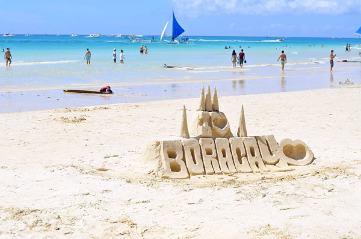
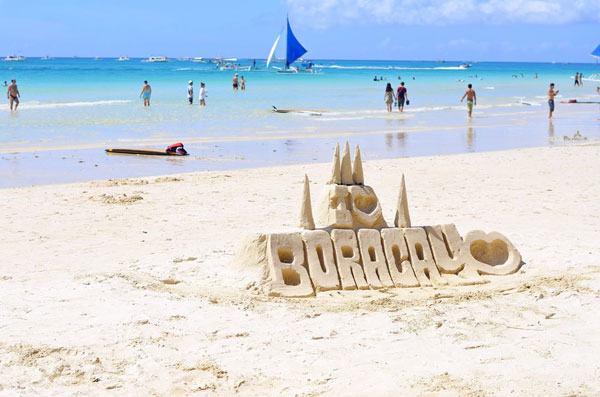

Swimming is one of the most enjoyable past times that we Filipinos enjoy. The Philippines being an archipelago is surrounded by bodies of water. The country's location near the equator counts for the arid weather for most parts of the year. It makes sense that we would turn to water to cool our warm bodies, especially during the summer season.
Swimming, apparently is not just for hobbies. It has good benefits on our body as well. Here are some of the benefits that we can observe while enjoying this activity.
 

In conclusion, Swimming is best experienced when spent with families and friends. We, as a family, make the most of our vacations by going to different beaches and resorts. It's a good way to bond and exercise and appreciate the beauty of nature around our country.